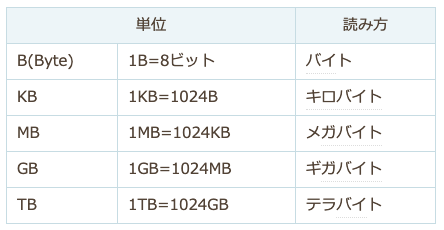

コンピューターとは

- computer は、広義には計算機、狭義には計算開始後は人手を介さずに計算終了まで動作する電子式汎用計算機
- 現代ではパーソナルコンピューターからスーパーコンピューターなどを含めたデジタルコンピューターを指します
- つまり計算をしてくれる道具です
コンピューターのほとんどがノイマン型
- コンピューターは、プログラムをデータとして記憶装置に格納し、これを順番に読み込んで実行します
- この方式は「コンピューターの父」とも呼ばれるハンガリー出身の数学者、ジョン・フォン・ノイマン(John von Neumann)氏によって1946年に提案された方式です
- ノイマンは、プログラムをハードウェアから独立させてデータとして外部から与え、汎用のハードウェアでこれを実行させる方式を発表しました
- これがノイマン型コンピューターです
- ソフトウェア(プログラム)という概念の誕生もこのときでした
現在のコンピューターのほとんどがノイマン型です。
- 携帯やスマートフォン
- フォトフレーム
- 掃除機のコントローラー
- MP3プレイヤー
従ってノイマン型コンピューターの特徴を理解し動作の原理を知ることで、プログラミング言語の基礎が理解でることになります。
すべてはメモリの上でおこっている
現在コンピュータを使うほとんどの作業は、このノイマン型コンピューターのルール上で起こっていることです。
- 基本的に単純な命令を一語一語順番に実行する機械にすぎない
- 命令とデータにそれ自体としては区別がない．形式はいずれもビット列
- プログラムカウンタで指される語が命令
- 演算命令の番地部として指された語がデータ
- 命令の取出しが電子的に行われるので高速
- プログラムをデータと同じように加工可能
つまりこれから勉強する「プログラミング」は、メモリ（RAM）上で命令（プログラム）とデータのやりとりをしているだけのことです。
情報の単位
２進数
- １ビット：０か１の情報を表現
- 0：オフ（通電していない状態）
- 1：オン（通電している状態）
- ８ビット：１バイトと呼び、アルファベットや数字の１文字を表現することができる
ファイルを保存すると、ファイルに書いてある文字や図はバイト単位で２進数に置き換わります。

ハードウェア
- 制御装置：プログラムを解読し、各装置に命令を出す
- 演算装置：命令に従って計算や処理を行う。制御装置と演算装置をあわせて「CPU」という
- 記憶装置：プログラムやデータを記憶したり保存したりする。「主記憶装置」と「外部記憶装置」に分かれる
- 入力装置：データを取り込み、メインメモリに渡す。キーボードやマウス
- 出力装置：メインメモリーのデータを出力する。プリンターやディスプレイ
メモリー
- パソコンを動作させる上でプログラムや処理に必要なデータを記憶する装置のことです
ROM（Read Only Memory）
- 読み出し専用のメモリー
- パソコンを動作させる基本的なプログラムやデータを保存するのに用いられます
- パソコンの電源を切ってもROMのデータは消えません
外部記憶装置
- プログラムや処理に必要なデータを記憶する装置のこと
- 電源を切っても、記憶内容を保存しています
- ハードディスクとリムーバブルメディアがあります
ハードディスク
- プログラムや作成したデータを記憶する装置のこと
- 内蔵型と外付け型がある
パソコン内部の処理の流れ
- パソコン内部では「マイクロプロセッサー」を中心としてデータのやり取りが行われています
- マイクロプロセッサーは、外部記憶装置のデーターをRAMに読み込み処理を行います
- 処理した結果は、RAMに記憶させ必要に応じて外部記憶装置に書き込みます
パソコンの起動
ファイルを作成し、保存して閉じる
- ファイルを作成する
- マイクロプロセッサの命令で、作成したファイルはRAMに記憶される
- ファイルを保存する
- マイクロプロセッサーの命令で、RAMに記憶されているファイルがハードディスクに書き込まれる
- ファイルを閉じる
- マイクロプロセッサーの命令で、RAMに記憶されているファイルが削除される
アプリケーションの終了
- アプリケーションを終了する
- マイクロプロセッサーの命令で、RAMに読み込まれたアプリケーションソフトが削除される
トラブルシューティング
コンピューターのトラブル解決
- トラブルを確認する
- トラブルを再現する
- 電源やケーブルは正しく接続されているかを確認する
- 本体や周辺機器を再起動する
- ドライバーやサービスを確認する
- 役に立つヘルプやサポート情報がないか探す
- 専任の担当者やメーカー等に問い合わせる
- 指示通りに作業する
- トラブルが解消されたことを確認する
- 類似するトラブルを防止する
トラブルの前のメンテナンス
- ハードディスクは、ホコリ等が積もらないよう常に掃除をする
- マウス・キーボードも同様にホコリ等が入らないよう注意をする
メンテナンス
- 本体や周辺機器の清掃
ハードディスクの管理
- ファイルの整理（不要なファイルは削除する）
最適化（デフラグ）
- ハードディスクでファイルの保存・削除を繰り返していくと、次第にアクセス速度が低下します
- これは、ファイルを保存できる領域が次第に不連続な領域になり、ファイルを見つけたり、保存したりする際の時間がかかるようになるためです
- このファイルの断片化のことを「フラグメンテーション」と呼びます
- 断片化の解消のためには「最適化（デフラグ）」を実行します
OSの機能とアプリケーションソフトの違い
- OS（オペレーティングシステム）は、コンピューターを動作させるために必要な「基本ソフト」です
- 特定の目的で利用するアプリケーションソフトは、OS上でさまざまな作業をおこなうための「応用ソフト」です